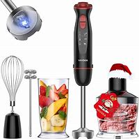
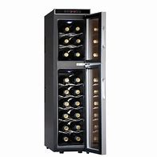
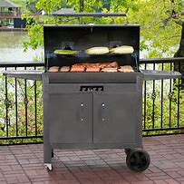
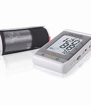

Productos
- DELL Inspiron 3525 Laptop 15.6" Full HD AMD Ryzen 5 8GB 512GB SSD
Características
- DELL Inspiron 3525.
- Sistema Operativo: Windows 11 Home.
- Procesador: AMD Ryzen 5-5500U / Serie 5000.
- Pantalla: 15.6" Full HD.
- Tarjeta Gráfica: AMD Radeon Graphics.
- Memoria RAM: 8GB.
- Almacenamiento: 512GB SSD.
- Vitamix, Batidora de Inmersión

Características
- Acero inoxidable y plástico
- 1 batidora de inmersión, 3 accesorios, y funda de almacenamiento
- 5 Velocidades
- Sommelier by Koblenz, Enfriador de Vinos, 18 Botellas

Características
- Capacidad para 18 botellas de 750 ml
- Sistema de enfriamiento termoeléctrico
- 2 Zonas de enfriamiento
- Masterbuilt, Asador a Carbón

Características
- 600 pulgadas cuadradas (0.38 m 2 ) de espacio de cocción total
- Rejillas de cocción de hierro fundido de alta resistencia
- Asa de fácil elevación para la carga inicial de carbón
- Puerta frontal de hierro fundido plegable para facilitar la carga de carbón durante la cocción
- Palanca de la parrilla para ajustar la altura de la parrilla de carbón
- Controles de tiro ajustables superior e inferior para el control de la temperatura
- Repisas laterales robustas de acero para un espacio de preparación adicional
- Cajón de cenizas deslizante para facilitar la limpieza
- Microlife medidor de presión arterial y pulso BP3MS1-4K

Características
- Medición de la presión arterial y el pulso
- Tecnología AFIB
- Detecta Fibrilación Atrial (AFIB) en el modo MAM
- MAM (3 mediciones consecutivas)
- 200 memorias para un usuario
- Fecha y hora
- Brazalete Universal 22-42cm
- Puede utilizarse con adaptador de corriente